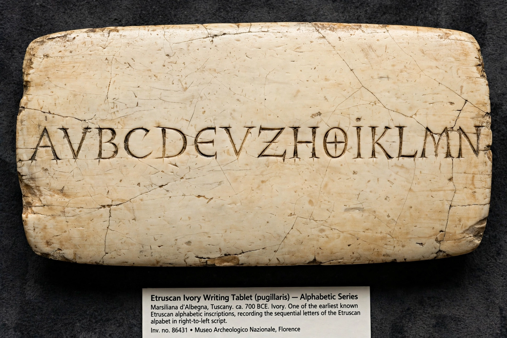

Etruscan alphabet

| Etruscan alphabet | |
| Type | Alphabet |
|---|---|
| Period | c. 700 BC – 1st century AD |
| Parent | Western (Euboean) Greek alphabet |
| Descendants | Latin alphabet; Oscan, Umbrian and other Old Italic scripts |
| Direction | Right-to-left (early texts sometimes boustrophedon) |
The Etruscan alphabet was used by the Etruscans of ancient Italy from about 700 BC until the 1st century AD, when it was displaced by the Latin alphabet — which itself derives from it. It was adapted from the western (Euboean) Greek alphabet used by Greek colonists at Pithecusae and Cumae.
Letters
The earliest abecedaria — model alphabets such as the one on the Marsiliana d'Albegna ivory tablet (c. 675 BC) — list 26 letters, but the Etruscan language lacked certain Greek sounds (the voiced stops b, d, g and the vowel o), so several letters fell out of practical use, leaving about 20 in the classical period. Etruscan wrote /f/ first with the digraph FH and later with a new sign, 𐌚, shaped like the numeral 8. Because Etruscan had no /g/, the letter C was later borrowed into Latin with the value of both /k/ and /g/.
Corpus and direction
More than 13,000 Etruscan inscriptions survive, most of them short funerary or dedicatory texts. The longest is the Liber Linteus, a ritual calendar written on linen that was later reused as mummy wrapping in Egypt. The alphabet was normally written from right to left, and word dividers (dots or spaces) were used inconsistently.
Legacy
Through its Italic neighbours, the script passed to Rome. The Latin alphabet preserves the Etruscan transmission of Greek letters: the shapes of F, and the values of C, Q, and X, all reflect Etruscan mediation. Other Old Italic scripts — Oscan, Umbrian, Faliscan, and South Picene — are close relatives, and the Runic alphabets of northern Europe may ultimately derive from an Old Italic source as well.
See also: Abjad, Cyrillic script